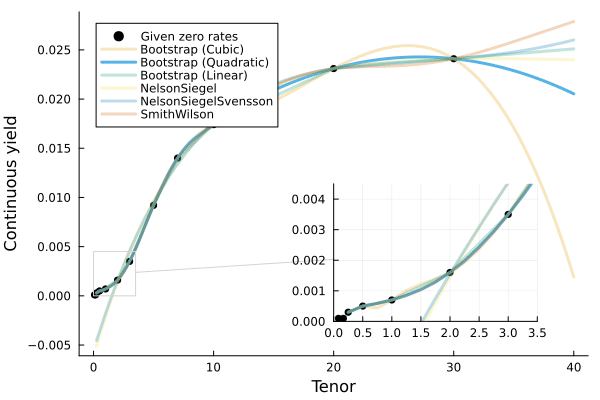

Packages
These packages are available for use in your project. Scroll down for more information and links to the associated repository for each one.
|
Easily work with standard tables and parametric models with common survival calculations. |
Insurance, annuity, premium, and reserve maths. |
|
Robust and fast calculations for |
Meeting your exposure calculation needs. |
|
Composable contracts, models, and functions that allow for modeling of both simple and complex financial instruments. |
Easy-to-use scenario generation that's FinanceModels.jl compatible. |
For consistency, you can lock any package in its current state and not worry about breaking changes to any code that you write. Julia’s package manager lets you exactly recreate a set of code and its dependencies. More information.
Adding and Using Packages
There are two ways to add packages:
- In the code itself:
using Pkg; Pkg.add("MortalityTables") - In the REPL, hit
]to enter Pkg mode and typeadd MortalityTablesMore info can be found at the Pkg manager documentation.
To use packages in your code:
using PackageNameMortalityTables.jl
Hassle-free mortality and other rate tables.
Features
- Full set of SOA mort.soa.org tables included
survivalanddecrementfunctions to calculate decrements over period of time- Partial year mortality calculations (Uniform, Constant, Balducci)
- Friendly syntax and flexible usage
- Extensive set of parametric mortality models.
Quickstart
Load and see information about a particular table:
julia> vbt2001 = MortalityTables.table("2001 VBT Residual Standard Select and Ultimate - Male Nonsmoker, ANB")
MortalityTable (Insured Lives Mortality):
Name:
2001 VBT Residual Standard Select and Ultimate - Male Nonsmoker, ANB
Fields:
(:select, :ultimate, :metadata)
Provider:
Society of Actuaries
mort.SOA.org ID:
1118
mort.SOA.org link:
https://mort.soa.org/ViewTable.aspx?&TableIdentity=1118
Description:
2001 Valuation Basic Table (VBT) Residual Standard Select and Ultimate Table - Male Nonsmoker.
Basis: Age Nearest Birthday.
Minimum Select Age: 0.
Maximum Select Age: 99.
Minimum Ultimate Age: 25.
Maximum Ultimate Age: 120The package revolves around easy-to-access vectors which are indexed by attained age:
julia> vbt2001.select[35] # vector of rates for issue age 35
0.00036
0.00048
⋮
0.94729
1.0
julia> vbt2001.select[35][35] # issue age 35, attained age 35
0.00036
julia> vbt2001.select[35][50:end] # issue age 35, attained age 50 through end of table
0.00316
0.00345
⋮
0.94729
1.0
julia> vbt2001.ultimate[95] # ultimate vectors only need to be called with the attained age
0.24298Calculate the force of mortality or survival over a range of time:
julia> survival(vbt2001.ultimate,30,40) # the survival between ages 30 and 40
0.9894404665434904
julia> decrement(vbt2001.ultimate,30,40) # the decrement between ages 30 and 40
0.010559533456509618Non-whole periods of time are supported when you specify the assumption (Constant(), Uniform(), or Balducci()) for fractional periods:
julia> survival(vbt2001.ultimate,30,40.5,Uniform()) # the survival between ages 30 and 40.5
0.9887676470262408Parametric Models
Over 20 different models included. Example with the Gompertz model
m = MortalityTables.Gompertz(a=0.01,b=0.2)
m[20] # the mortality rate at age 20
decrement(m,20,25) # the five year cumulative mortality rate
survival(m,20,25) # the five year survival rateActuaryUtilities.jl
A collection of common functions/manipulations used in Actuarial Calculations.
A collection of common functions/manipulations used in Actuarial Calculations.
Quickstart
cfs = [5, 5, 105]
times = [1, 2, 3]
discount_rate = 0.03
present_value(discount_rate, cfs, times) # 105.65
duration(Macaulay(), discount_rate, cfs, times) # 2.86
duration(discount_rate, cfs, times) # 2.78
convexity(discount_rate, cfs, times) # 10.62Features
Financial Maths
duration:- Calculate the
Macaulay,Modified, orDV01durations for a set of cashflows
- Calculate the
convexityfor price sensitivity- Flexible interest rate options via the
FinanceModels.jlpackage. internal_rate_of_returnorirrto calculate the IRR given cashflows (including at timepoints like Excel’sXIRR)breakevento calculate the breakeven time for a set of cashflowsaccum_offsetto calculate accumulations like survivorship from a mortality vector
Key Rate Sensitivities via Automatic Differentiation
Compute exact key rate durations, DV01s, and convexities using ForwardDiff through ZeroRateCurve from FinanceModels.jl — machine-precision sensitivities in a single pass, no bump-and-reprice required.
sensitivities: bundled value, key rate durations, and convexity matrix in a single AD pass- Two-curve decomposition: separate
IR01(risk-free) andCS01(credit spread) sensitivities - Do-block syntax for rate-dependent instruments (callable bonds, floaters)
- Hull-White stochastic model: key rate sensitivities of Monte Carlo expected values
Options Pricing
eurocallandeuroputfor Black-Scholes option prices
Risk Measures
- Calculate risk measures for a given vector of risks:
CTEfor the Conditional Tail Expectation, orVaRfor the percentile/Value at Risk.
Insurance mechanics
duration:- Calculate the duration given an issue date and date (a.k.a. policy duration)
LifeContingencies.jl
Common life contingent calculations with a convenient interface.
Features
- Integration with other JuliaActuary packages such as MortalityTables.jl
- Fast calculations, with some parts utilizing parallel processing power automatically
- Use functions that look more like the math you are used to (e.g.
A,ä) with Unicode support - All of the power, speed, convenience, tooling, and ecosystem of Julia
- Flexible and modular modeling approach
Package Overview
- Leverages MortalityTables.jl for the mortality calculations
- Contains common insurance calculations such as:
Insurance(life,yield): Whole lifeInsurance(life,yield,n): Term life fornyearsä(life,yield):present_valueof life-contingent annuityä(life,yield,n):present_valueof life-contingent annuity due fornyears
- Contains various commutation functions such as
D(x),M(x),C(x), etc. SingleLifeandJointLifecapable- Interest rate mechanics via
FinanceModels.jl - More documentation available by clicking the DOCS badges at the top of this README
Examples
Basic Functions
Calculate various items for a 30-year-old male nonsmoker using 2015 VBT base table and a 5% interest rate
using LifeContingencies
using MortalityTables
using FinanceModels
import LifeContingencies: V, ä # pull the shortform notation into scope
# load mortality rates from MortalityTables.jl
vbt2001 = MortalityTables.table("2001 VBT Residual Standard Select and Ultimate - Male Nonsmoker, ANB")
issue_age = 30
life = SingleLife( # The life underlying the risk
mortality = vbt2001.select[issue_age], # -- Mortality rates
)
yield = FinanceModels.Yield.Constant(0.05)
lc = LifeContingency(life, yield) # LifeContingency joins the risk with interest
ins = Insurance(lc) # Whole Life insurance
ins = Insurance(life, yield) # alternate way to constructWith the above life contingent data, we can calculate vectors of relevant information:
cashflows(ins) # A vector of the unit cashflows
timepoints(ins) # The timepoints associated with the cashflows
survival(ins) # The survival vector
benefit(ins) # The unit benefit vector
probability(ins) # The probability of benefit paymentSome of the above will return lazy results. For example, cashflows(ins) will return a Generator which can be efficiently used in most places you’d use a vector of cashflows (e.g. pv(...) or sum(...)) but has the advantage of being non-allocating (less memory used, faster computations). To get a computed vector instead of the generator, simply call collect(...) on the result: collect(cashflows(ins)).
Or calculate summary scalars:
present_value(ins) # The actuarial present value
premium_net(lc) # Net whole life premium
V(lc,5) # Net premium reserve for whole life insurance at time 5Other types of life contingent benefits:
Insurance(lc,10) # 10 year term insurance
AnnuityImmediate(lc) # Whole life annuity due
AnnuityDue(lc) # Whole life annuity due
ä(lc) # Shortform notation
ä(lc, 5) # 5 year annuity due
ä(lc, 5, certain=5,frequency=4) # 5 year annuity due, with 5 year certain payable 4x per year
... # and more!Constructing Lives
SingleLife(vbt2001.select[50]) # no keywords, just a mortality vector
SingleLife(vbt2001.select[50],issue_age = 60) # select at 50, but now 60
SingleLife(vbt2001.select,issue_age = 50) # use issue_age to pick the right select vector
SingleLife(mortality=vbt2001.select,issue_age = 50) # mort can also be a keyword
FinanceModels.jl
Flexible and composable yield curves and interest functions.
FinanceModels.jl provides a set of composable contracts, models, and functions that allow for modeling of both simple and complex financial instruments. The resulting models, such as discount rates or term structures, can then be used across the JuliaActuary ecosystem to perform actuarial and financial analysis.
Additionally, the models can be used to project contracts through time: most basically as a series of cashflows but more complex output can be defined for contracts.

QuickStart
using FinanceModels
# a set of market-observed prices we wish to calibrate the model to
# annual effective unless otherwise specified
q_rate = ZCBYield([0.01,0.02,0.03]);
q_spread = ZCBYield([0.01,0.01,0.01]);
# bootstrap a linear spline yield model
model_rate = fit(Spline.Linear(),q_rate,Fit.Bootstrap());⠀
model_spread = fit(Spline.Linear(),q_spread,Fit.Bootstrap());
# the zero rate is the combination of the two underlying rates
zero(m_spread + m_rate,1) # 0.02 annual effective rate
# the discount is the same as if we added the underlying zero rates
discount(m_spread + m_rate,0,3) ≈ discount(0.01 + 0.03,3) # true
# compute the present value of a contract (a cashflow of 10 at time 3)
present_value(m_rate,Cashflow(10,3)) # 9.15...Overview of FinanceModels

Often we start with observed or assumed values for existing contracts. We want to then use those assumed values to extend the valuation logic to new contracts. For example, we may have a set of bond yields which we then want to discount a series of insurance obligations.
In the language of FinanceModels, we would have a set of Quotes which are used to fit a Model. That model is then used to discount a new series of cashflows.
That’s just an example, and we can use the various components in different ways depending on the objective of the analysis.
Contracts and Quotes
Contracts are a way to represent financial obligations. These can be valued using a model, projected into a future steam of values, or combined with assumed prices as a Quote.
Included are a number of primitives and convenience methods for contracts:
Existing structs:
CashflowBond.FixedBond.FloatingForward(an obligation with a forward start time)Composite(combine two other contracts, e.g. into a swap)EuroCallCommonEquityOption.Cap,Option.Floor,Option.Swaption(interest rate derivatives)
Commonly, we deal with conventions that imply a contract and an observed price. For example, we may talk about a treasury yield of 0.03. This is a description that implies a Quoteed price for an underling fixed bond. In FinanceModels, we could use CMTYield(rate,tenor) which would create a Quote(price,Bond.Fixed(...)). In this way, we can conveniently create a number of Quotes which can be used to fit models. Such convenience methods include:
ZCBYieldZCBPriceCMTYieldParYieldParSwapYieldForwardYield
FinanceModels offers a way to define new contracts as well.
Cashflows
A Cashflows obligation are themselves a contract, but other contracts can be considered as essentially anything that can be combined with assumptions (a model) to derive a collection of cashflows.
For example, a obligation that pays 1.75 at time 2 could be represented as: Cashflow(1.75,2).
Models
Models are objects that can be fit to observed prices and then subsequently used to make valuations of other cashflows/contracts.
Yield models include:
Yield.Constant- Bootstrapped
Splines Yield.SmithWilsonYield.NelsonSiegelYield.NelsonSiegelSvensson
ZeroRateCurve — Direct Construction
Construct a zero-rate curve directly from rates and tenors without fitting:
- Multiple interpolation options (MonotoneConvex default, Linear, PCHIP, Cubic, Akima)
- ForwardDiff-compatible for AD-based sensitivities (key rate durations, DV01, convexity)
Stochastic Short-Rate Models
ShortRate.Vasicek,ShortRate.CoxIngersollRoss,ShortRate.HullWhitesimulate()for Monte Carlo rate path generationpv_mc()for expected present values under stochastic rates- Closed-form pricing for caps, floors, swaptions (Gaussian models)
Other models include:
BlackScholesMertonderivative valuation
Projections
Most basically, we can project a contract into a series of Cashflows:
julia> b = Bond.Fixed(0.04,Periodic(2),3)
FinanceModels.Bond.Fixed{Periodic, Float64, Int64}(0.04, Periodic(2), 3)
julia> collect(b)
6-element Vector{Cashflow{Float64, Float64}}:
Cashflow{Float64, Float64}(0.02, 0.5)
Cashflow{Float64, Float64}(0.02, 1.0)
Cashflow{Float64, Float64}(0.02, 1.5)
Cashflow{Float64, Float64}(0.02, 2.0)
Cashflow{Float64, Float64}(0.02, 2.5)
Cashflow{Float64, Float64}(1.02, 3.0)However, Projections allow one to combine three elements which can be extended to define any desired output (such as amortization schedules, financial statement projections, or account value rollforwards). The three elements are:
- the underlying contract of interest
- the model which includes assumptions of how the contract will behave
- a
ProjectionKindwhich indicates the kind of output desired (cashflow stream, amortization schedule, etc…)
Fitting Models
Model Method
| |
|------------| |---------------|
fit(Spline.Cubic(), CMTYield.([0.04,0.05,0.055,0.06,0055],[1,2,3,4,5]), Fit.Bootstrap())
|-------------------------------------------------|
|
Quotes- Model could be
Spline.Linear(),Yield.NelsonSiegelSvensson(),Equity.BlackScholesMerton(...), etc. - Quote could be
CMTYields,ParYields,Option.Eurocall, etc. - Method could be
Fit.Loss(x->x^2),Fit.Loss(x->abs(x)),Fit.Bootstrap(), etc.
This unified way to fit models offers a much simpler way to extend functionality to new models or contract types.
Using Models
After being fit, models can be used to value contracts:
present_value(model,cashflows)Additionally, ActuaryUtilities.jl offers a number of other methods that can be used, such as duration, convexity, price which can be used for analysis with the fitted models.
Rates
Rates are types that wrap scalar values to provide information about how to determine discount and accumulation factors.
There are two Frequency types:
Periodic(m)for rates that compoundmtimes per period (e.g.mtimes per year if working with annual rates).Continuous()for continuously compounding rates.
Examples
Continuous(0.05) # 5% continuously compounded
Periodic(0.05,2) # 5% compounded twice per periodThese are both subtypes of the parent Rate type and are instantiated as:
Rate(0.05,Continuous()) # 5% continuously compounded
Rate(0.05,Periodic(2)) # 5% compounded twice per periodRates can also be constructed by specifying the Frequency and then passing a scalar rate:
Periodic(1)(0.05)
Continuous()(0.05)Conversion
Convert rates between different types with convert. E.g.:
r = Rate(FinanceModels.Periodic(12),0.01) # rate that compounds 12 times per rate period (ie monthly)
convert(FinanceModels.Periodic(1),r) # convert monthly rate to annual effective
convert(FinanceModels.Continuous(),r) # convert monthly rate to continuousArithmetic
Adding, substracting, multiplying, dividing, and comparing rates is supported.
ExperienceAnalysis.jl
Meeting your exposure calculation needs.
Quickstart
df = DataFrame(
policy_id = 1:3,
issue_date = [Date(2020,5,10), Date(2020,4,5), Date(2019, 3, 10)],
end_date = [Date(2022, 6, 10), Date(2022, 8, 10), Date(2022,12,31)],
status = ["claim", "lapse", "inforce"]
)
df.policy_year = exposure.(
ExperienceAnalysis.Anniversary(Year(1)),
df.issue_date,
df.end_date,
df.status .== "claim"; # continued exposure
study_start = Date(2020, 1, 1),
study_end = Date(2022, 12, 31)
)
df = flatten(df, :policy_year)
df.exposure_fraction =
map(e -> yearfrac(e.from, e.to + Day(1), DayCounts.Thirty360()), df.policy_year)
# + Day(1) above because DayCounts has Date(2020, 1, 1) to Date(2021, 1, 1) as an exposure of 1.0
# here we end the interval at Date(2020, 12, 31), so we need to add a day to get the correct exposure fraction.policy_idInt64 |
issue_dateDate |
end_dateDate |
statusString |
policy_year@NamedTuple{from::Date, to::Date, policy\_timestep::Int64} |
exposure_fractionFloat64 |
|---|---|---|---|---|---|
| 1 | 2020-05-10 | 2022-06-10 | claim | (from = Date(“2020-05-10”), to = Date(“2021-05-09”), policy_timestep = 1) | 1.0 |
| 1 | 2020-05-10 | 2022-06-10 | claim | (from = Date(“2021-05-10”), to = Date(“2022-05-09”), policy_timestep = 2) | 1.0 |
| 1 | 2020-05-10 | 2022-06-10 | claim | (from = Date(“2022-05-10”), to = Date(“2023-05-09”), policy_timestep = 3) | 1.0 |
| 2 | 2020-04-05 | 2022-08-10 | lapse | (from = Date(“2020-04-05”), to = Date(“2021-04-04”), policy_timestep = 1) | 1.0 |
| 2 | 2020-04-05 | 2022-08-10 | lapse | (from = Date(“2021-04-05”), to = Date(“2022-04-04”), policy_timestep = 2) | 1.0 |
| 2 | 2020-04-05 | 2022-08-10 | lapse | (from = Date(“2022-04-05”), to = Date(“2022-08-10”), policy_timestep = 3) | 0.35 |
| 3 | 2019-03-10 | 2022-12-31 | inforce | (from = Date(“2020-01-01”), to = Date(“2020-03-09”), policy_timestep = 1) | 0.191667 |
| 3 | 2019-03-10 | 2022-12-31 | inforce | (from = Date(“2020-03-10”), to = Date(“2021-03-09”), policy_timestep = 2) | 1.0 |
| 3 | 2019-03-10 | 2022-12-31 | inforce | (from = Date(“2021-03-10”), to = Date(“2022-03-09”), policy_timestep = 3) | 1.0 |
| 3 | 2019-03-10 | 2022-12-31 | inforce | (from = Date(“2022-03-10”), to = Date(“2022-12-31”), policy_timestep = 4) | 0.808333 |
Available Exposure Basis
ExperienceAnalysis.Anniversary(period)will give exposures periods based on the first dateExperienceAnalysis.Calendar(period)will follow calendar periods (e.g. month or year)ExperienceAnalysis.AnniversaryCalendar(period,period)will split into the smaller of the calendar or policy period.
Where period is a Period Type from the Dates standard library.
Calculate exposures with exposures(basis,from,to,continue_exposure).
continue_exposuresindicates whether the exposure should be extended through the full exposure period rather than terminate at thetodate.
EconomicScenarioGenerators.jl
Easy-to-use scenario generation that’s FinanceModels.jl compatible.
Models
Interest Rate Models
VasicekCoxIngersolRossHullWhite
EquityModels
BlackScholesMerton
Interest Rate Model Examples
Vasicek
m = Vasicek(0.136,0.0168,0.0119,Continuous(0.01)) # a, b, σ, initial Rate
s = ScenarioGenerator(
1, # timestep
30, # projection horizon
m, # model
)This can be iterated over, or you can collect all of the rates like:
rates = collect(s)or
for r in s
# do something with r
endAnd the package integrates with FinanceModels.jl:
YieldCurve(s)
will produce a yield curve object:
⠀⠀⠀⠀⠀⠀⠀⠀⠀⠀⠀⠀⠀⠀Yield Curve (FinanceModels.BootstrapCurve)⠀⠀⠀⠀⠀⠀⠀⠀⠀⠀⠀⠀⠀
┌────────────────────────────────────────────────────────────┐
0.03 │⠀⠀⠀⠀⠀⠀⠀⠀⠀⠀⠀⠀⠀⠀⠀⠀⠀⠀⠀⠀⠀⠀⠀⠀⠀⠀⠀⠀⠀⠀⠀⠀⠀⠀⠀⠀⠀⠀⠀⠀⠀⠀⠀⠀⠀⣀⠤⠤⠔⠒⠉⠉⠒⠒⠒⠒⠒⠤⣄⣀│ Zero rates
│⠀⠀⠀⠀⠀⠀⠀⠀⠀⠀⠀⠀⠀⠀⠀⠀⠀⠀⠀⠀⠀⠀⠀⠀⠀⠀⠀⠀⠀⠀⠀⠀⠀⠀⠀⠀⠀⠀⠀⠀⣀⠤⠒⠒⠉⠀⠀⠀⠀⠀⠀⠀⠀⠀⠀⠀⠀⠀⠀⠀│
│⠀⠀⠀⠀⠀⠀⠀⠀⠀⠀⠀⠀⠀⠀⠀⠀⠀⠀⠀⠀⠀⠀⠀⠀⠀⠀⠀⠀⠀⠀⠀⠀⠀⠀⠀⠀⠀⣀⠔⠊⠁⠀⠀⠀⠀⠀⠀⠀⠀⠀⠀⠀⠀⠀⠀⠀⠀⠀⠀⠀│
│⠀⠀⠀⠀⠀⠀⠀⠀⠀⠀⠀⠀⠀⠀⠀⠀⠀⠀⠀⠀⠀⠀⠀⠀⠀⠀⠀⠀⠀⠀⠀⠀⠀⠀⣀⠔⠋⠁⠀⠀⠀⠀⠀⠀⠀⠀⠀⠀⠀⠀⠀⠀⠀⠀⠀⠀⠀⠀⠀⠀│
│⠀⠀⠀⠀⠀⠀⠀⠀⠀⠀⠀⠀⠀⠀⠀⠀⠀⠀⠀⠀⠀⠀⠀⠀⢀⣀⣀⠀⠀⣀⡤⠖⠊⠉⠀⠀⠀⠀⠀⠀⠀⠀⠀⠀⠀⠀⠀⠀⠀⠀⠀⠀⠀⠀⠀⠀⠀⠀⠀⠀│
│⠀⠀⠀⠀⠀⠀⠀⠀⠀⠀⠀⠀⠀⠀⠀⠀⠀⠀⠀⠀⣀⠤⠖⠋⠁⠀⠀⠉⠉⠁⠀⠀⠀⠀⠀⠀⠀⠀⠀⠀⠀⠀⠀⠀⠀⠀⠀⠀⠀⠀⠀⠀⠀⠀⠀⠀⠀⠀⠀⠀│
│⠀⠀⠀⠀⠀⠀⠀⠀⠀⠀⠀⠀⠀⠀⠀⠀⠀⣀⠔⠋⠀⠀⠀⠀⠀⠀⠀⠀⠀⠀⠀⠀⠀⠀⠀⠀⠀⠀⠀⠀⠀⠀⠀⠀⠀⠀⠀⠀⠀⠀⠀⠀⠀⠀⠀⠀⠀⠀⠀⠀│
Continuous │⠀⠀⠀⠀⠀⠀⠀⠀⠀⣀⡤⠒⠓⠦⠤⠖⠉⠀⠀⠀⠀⠀⠀⠀⠀⠀⠀⠀⠀⠀⠀⠀⠀⠀⠀⠀⠀⠀⠀⠀⠀⠀⠀⠀⠀⠀⠀⠀⠀⠀⠀⠀⠀⠀⠀⠀⠀⠀⠀⠀│
│⠀⠀⠀⠀⠀⠀⠀⢰⠋⠁⠀⠀⠀⠀⠀⠀⠀⠀⠀⠀⠀⠀⠀⠀⠀⠀⠀⠀⠀⠀⠀⠀⠀⠀⠀⠀⠀⠀⠀⠀⠀⠀⠀⠀⠀⠀⠀⠀⠀⠀⠀⠀⠀⠀⠀⠀⠀⠀⠀⠀│
│⠀⠀⣀⠖⠢⡀⡰⠃⠀⠀⠀⠀⠀⠀⠀⠀⠀⠀⠀⠀⠀⠀⠀⠀⠀⠀⠀⠀⠀⠀⠀⠀⠀⠀⠀⠀⠀⠀⠀⠀⠀⠀⠀⠀⠀⠀⠀⠀⠀⠀⠀⠀⠀⠀⠀⠀⠀⠀⠀⠀│
│⠉⠉⠁⠀⠀⠉⠁⠀⠀⠀⠀⠀⠀⠀⠀⠀⠀⠀⠀⠀⠀⠀⠀⠀⠀⠀⠀⠀⠀⠀⠀⠀⠀⠀⠀⠀⠀⠀⠀⠀⠀⠀⠀⠀⠀⠀⠀⠀⠀⠀⠀⠀⠀⠀⠀⠀⠀⠀⠀⠀│
│⠀⠀⠀⠀⠀⠀⠀⠀⠀⠀⠀⠀⠀⠀⠀⠀⠀⠀⠀⠀⠀⠀⠀⠀⠀⠀⠀⠀⠀⠀⠀⠀⠀⠀⠀⠀⠀⠀⠀⠀⠀⠀⠀⠀⠀⠀⠀⠀⠀⠀⠀⠀⠀⠀⠀⠀⠀⠀⠀⠀│
│⠀⠀⠀⠀⠀⠀⠀⠀⠀⠀⠀⠀⠀⠀⠀⠀⠀⠀⠀⠀⠀⠀⠀⠀⠀⠀⠀⠀⠀⠀⠀⠀⠀⠀⠀⠀⠀⠀⠀⠀⠀⠀⠀⠀⠀⠀⠀⠀⠀⠀⠀⠀⠀⠀⠀⠀⠀⠀⠀⠀│
│⠀⠀⠀⠀⠀⠀⠀⠀⠀⠀⠀⠀⠀⠀⠀⠀⠀⠀⠀⠀⠀⠀⠀⠀⠀⠀⠀⠀⠀⠀⠀⠀⠀⠀⠀⠀⠀⠀⠀⠀⠀⠀⠀⠀⠀⠀⠀⠀⠀⠀⠀⠀⠀⠀⠀⠀⠀⠀⠀⠀│
0 │⠀⠀⠀⠀⠀⠀⠀⠀⠀⠀⠀⠀⠀⠀⠀⠀⠀⠀⠀⠀⠀⠀⠀⠀⠀⠀⠀⠀⠀⠀⠀⠀⠀⠀⠀⠀⠀⠀⠀⠀⠀⠀⠀⠀⠀⠀⠀⠀⠀⠀⠀⠀⠀⠀⠀⠀⠀⠀⠀⠀│
└────────────────────────────────────────────────────────────┘
⠀0⠀⠀⠀⠀⠀⠀⠀⠀⠀⠀⠀⠀⠀⠀⠀⠀⠀⠀⠀⠀⠀⠀⠀⠀⠀⠀time⠀⠀⠀⠀⠀⠀⠀⠀⠀⠀⠀⠀⠀⠀⠀⠀⠀⠀⠀⠀⠀⠀⠀⠀⠀⠀⠀30⠀